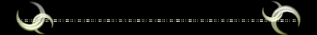

| ヤゲンギンユウ 夜幻吟遊 森と海の狭間 光と闇の狭間 儚い唄に耳を澄ませ 導かれるままに歩を進めれば そこに彼は居るのだと 古の彼方に紡がれた唄は 貴方へ向けて微笑んだ ＜ Opening ＞ 「…やぁ こんばんは 旅行く其処の御方」 「貴方に廻り逢えて光栄だ……そう…もしも貴方さえ望むのならば…」 「この月の元、《私》に歌を紡がせて頂けないだろうか？」 …貴方が出会ったのは《…》月の元 微《え》む《吟遊詩人》… ここは何処の物語？ これはどちらのお話かしら？ 満月の元、夜風に流れ 笑い歌っている光の唄と 新月の元、夜風を拒み 泣き叫んでいる闇の唄 繰り返す月の満ち欠け―――光は闇へ 闇は光へ けして出逢うこと叶わぬ《満》月と《新》月は それでも手を取り合ったまま 藍天の道を踊るのでしょう …迷い子を導く《満》月の光は 時に呪いの始まりを告げ… …路を掻き消す《新》月の闇は 時にか弱い子羊を生かすのでしょう… 「聴衆は一人…観衆は文字通り星の数…」 「天球の彼方の観衆には、私ごときの唄は届くまい…」 「今宵、貴方にお聞かせするのは……私の知る《…》月の物語…」 「貴方が出会うのは――――」 …何が虚偽？何が真実？ それは真実？それは虚偽…？ そ の 答 え を 得 た 者 は . …《彼ら》の唄を聴きとげた者は 未だかつて存在し得ぬという そう《吟遊詩人》自身もその一人… 伝え語りの物語 言ノ葉の端に佇む謎かけ 《彼ら》の唄を聴きとげた時…貴方はあの〝足音〟を聞くのでしょう… 嗚呼… …聞こえますか《彼ら》の唄 聞こえていますか《…》月の唄 ＜月に囚われた吟遊詩人 彼の歌う物語の先に貴方は彼らに出会うでしょう＞  ＜ Concerto ＞ 森の闇 ……彼らが出会ったのは《満》月の元 微《嗤》む〝吟遊詩人〟… 「…今宵は一つの物語をお聞かせしよう それは交差する夜のお話…」 ……昔々ある所に、暗いくらい森がありました。 そしてある時 可哀想な二人の子供が森へ迷いこんでしまいました…。 光の差さない漆黒に横たわる、音の波紋も消え失せたそこは迷宮。 西の外れで少年は脅え、東の外れで少女は泣いていました。 暗く寒い森は悪意に満ち、帰り道は失われ、時折風に歌うのは呪われし獣の唸り声。 黒い木々の葉の間に、微かに微かに見える星月は、 余りにも微かな希望でしかありませんでした…。 木々の上の光が 僅かに天を廻った頃、少年は希望を胸に宿し、立ち上がりました。 あの星月を道標にして、きっと森を抜けるのです。 踏みしめる星が 僅かに爪先で廻った頃、少女は絶望を胸に宿し、蹲りました。 どう足掻いてみても、きっと助からないのです。 進み進み行く少年……泣き泣き濡れる少女…。 木々の葉の向こうで、微かな光が輝いています…。 |
|
|
光を道標に進み続ける内に とうとう少年は人の声を聞きました 闇と共に蹲っている内に とうとう少女は獣の息を聞きました 希望を胸に足を進めた少年は 探しに来てくれた人と廻り逢い 泣き笑いをしながら村へ帰りました 絶望を胸に足を止めた少女は 探しに来てくれた獣と廻り逢い とうとう村へ帰ってきませんでしたとさ |
光を道標に進み続ける内に とうとう少年は獣の息を聞きました 闇と共に蹲っている内に とうとう少女は人の声を聞きました 希望を胸に足を進めた少年は 探しに来てくれた獣と廻り逢い とうとう村へ帰ってきませんでした 絶望を胸に足を止めた少女は 探しに来てくれた人と廻り逢い 泣き笑いをしながら村へ帰りましたとさ |
|
……めでたし…めでたし…………。 「待ち受ける運命の結果など （彼らにとっての）光と闇の価値など」 「この世に生きる誰が語る事が出来るのだろう」 …何が正しくて 何が間違っているのだろうね？ ＜闇に遮られた満月の光が唄った それは惑う未来へ捧げられた協奏曲＞ |
|
|
＜ Rhapsody ＞ 冷たい星影 ……貴方が出会ったのは《新》月の元 微《嗤》む 〝吟遊詩人〟… 「…今宵は〝彼ら〟の謡った唄をお聞かせしよう それは漆黒の夜のお話…」 |
|
「助けて」？ そんな言葉を叫んだ所で救いがあるとでも？ 自嘲するような三日月の唇が 奈落へ堕ちてゆく 諦める、という事を 覚えてしまったのはいつだったろう 知らないままでいたらこの光は 輝いただろうか いっそ壊れてしまえば良いのに 壊れた箍は二度と帰らないでしょ？ そしたら、きっともう、痛くないよね… ああそっか、いないんだね、カミサマなんて！ 闇が嫌い？ボクが嫌い？ 知っていたよ、そんなこと ボクを一番嫌いなのは、ボクなんだから 差し伸べられた手を掴まないのは 何故だか君は解っているの？ |
光なんて遠い昔に失った 闇に慣れた目は 。 もう光に触れる事さえ 悲しみの新月の涙は 。 夜闇に紛れて誰にも見えない 。 「偽善者」 …何て僕に似合う言葉だろう 時の中で希望、を失った。 信じる、という事を忘れた。 手に入れたのは冷たく黒い障壁だけ。 堕ちていけ孤独の海 裏切りの涙はもういらない 永遠に、沈んでしまえ水底に 闇なんて消えた方が嬉しいでしょ？ 罪深き手に茨を巻いて |
| 「素敵な綺麗事ね」 | いっそ自分から突き堕とそう |
| ね、ほら、卑しいでしょう？ 醜いでしょう？汚らわしいでしょう？ 光を喰うボクら闇なんて消えちゃえば良いんだよ …ボクを認めないで、お願いだから 終わらせて、誰か、この闇の怨嗟を ああ、あの人にも、きっともう、逢えないね… 「……ごめんなさい…」 |
ほんとの愛なんて 在る筈無い そう信じないとこの心は 切り裂いた生贄を太陽に捧げよう 。 どうか、もう一度だけ、恩寵を 。 ……寒い、よ… |
こんな冷たい闇の世界で一体誰が光を信じられるというのだろう？ 貴方は知ってるの信じてるの？ボクらが決して目にする事の出来ない光、を？ |
|
| きょうめい 。 ＜新月と霞む消える星影が歌った それは冷たい叫鳴の狂詩曲＞ |
|
＜ Serenade ＞ 涙の波紋 ……彼が出会ったのは《新》月の元 微《笑》む 〝吟遊詩人〟… 「…今宵は〝少年〟を詠った唄をお聞かせしよう それは儚い夜のお話…」 ……森に浮かぶ湖畔の小川 ゆらりゆらりと漂い揺れて 波間たゆたう少年の小船は 森の風の細腕に抱かれまどろむ 彼はどこへ行くの？ …誰かが聞いて 答える声は 新月の言ノ葉 「…それは彼すらも知らないのでしょう…」 みなも 新月の照らす夜の帳 水面に消える星明り 闇に閉ざされた瞳に映るは ただ 己の指先と黒く光る水面… ゆらりゆらりと震え目覚めて 静かに時は流れ出す 遥か ふなべり ホタル 道連れは天球の彼方の星々 そして時折船縁に留まる儚光虫 ウンディーネ シルフィード 歌い手は 波間でさざめく水精霊 森葉と髪とをそよがせる風精霊 しんと眠る新月の夜 静かに船は動き出した 生き行く場所も知らず…生まれ来た場所も知らず… それでも少年を乗せた小船は一人 静かに森を進むのだろう… 貴方は何処へ行くの？ …誰かが尋ねて 泣いている無くし物に逢いに行くのです。 …少年が呟いて 貴方は何処へ行くの？ …誰かは尋ねて 行く先などは知りません。ただ、遠い遠い所に。 …少年は呟いた 静かに流れる時は水と風の歌声 神の息吹が彼の船を押す 波間に落ちた新月の涙が 伸ばされた彼の指に触れる その碧い双眸…闇に閉ざされた碧は 静かにそっと伏せられて 闇色の涙をすくうのでしょう 微かな星が道標 少年の小船は流れ出した 森の湖畔…生まれる小川…その先に待つのは闇か光か ただ 静かに 歩みを進める少年 その手を取るのは光か闇か 彼の行く先を知る神は ただ微笑んで 見送られたと云う…… ＜涙の旋律と新月の光が謡った それは戻らぬ彼を見送る小夜曲＞ |
|
| ＜ Fantasia ＞ 夜の風唄 ……彼女が出会ったのは《満》月の元 微《笑》む 〝吟遊詩人〟… 「…今宵は〝彼〟の歌った唄をお聞かせしよう それは優しい夜のお話…」 『…星明りの無い暗闇の中 迷子になってしまったの』 目印忘れて彷徨う 夜空色の鳥 ――夜の風が笑いながら歌う さざなみ …悲しみの海が唄うのかい？その漣の声は聞こえる？ 夜は暗いだけで寒いだけで何も良いことが無いって、そんな 僕らに対してあんまりじゃないかい？ 陽だまりのような優しい夜も、君を成長させてくれる夜も、ちゃんと此処にあるんだよ ナミダイロ 涙の止まらない君にあげよう 瑠璃色ドロップ そのドロップに口付けをして歩いてみると良い 東の空から光が迎えにくる …それが何から出来ているか知っているかい？ 耳を澄ませてみれば良い 悲しみの海の漣に紛れて、君に宛てた歌が笑っている 悲しみ 漣の歌に囚われないで… こんなにも近くにいるじゃないか ライラック さあ行っておいで、小さな鳥よ その小さな羽根で夜空を裂いて、流れ星のように 悲しみの海の上を飛んでゆけ そんなに立ち尽くさないで ほら――振り返ってご覧 君を心配そうに見ている瞳が 星の隣で光っている 君に向けられた思いの歌 君の耳には聞こえているかい？ 向けられた想いの結晶を |
|
| 「こんな醜い私を心配してくれる人なんている訳が無いもの」 | |
| 自分ごと否定することは | |
| 「お願い、気付いて、貴方の涙が悲しいの…」 | |
…君は君に宛てられた 優しい歌まで聞こえないふりをするのかい？ 瑠璃色ドロップ 原材料名：貴方に贈られた誰かの心 どうか突き返さないで 君は飛び続けられるから 悲しみの海 夜空の星 その狭間の空を、小さな鳥が飛んでいく 太陽求め東の空まで ……ああ 夜が明けるよ…。 |
|
＜笑う満月と訪れる朝焼けが唄った それは貴方を呼ぶ誰かの幻想曲＞ |
|
＜ Symphony ＞ ……貴方が出会ったのは《…》月の元 微《え》む 〝吟遊詩人〟… 「…今宵は〝彼女〟の唄をお聞かせしよう それは………」 涙零し …〝嫌われるよりは独りが良いの〟と微笑みながら黙って手を放す こくあ . 片翼の黒鴉 折れた翼を 細い腕で抱きしめていた 「失くしてしまうくらいなら」 『嗚呼 気付かないのね その孤独の闇は』 「最初から、何も無い方が良いの」 『貴方を捕らえて 奈落へと突き堕とすのに…』 暗い暗い奈落の底 闇の中で 届くはずもない星明かりが光る かくま Eden 誰の刃も存在しない それは少女を匿う孤独の中 それでも、遠い遠い光に恋焦がれて 手を伸ばした遠い記憶 〝私の翼は 空に届かない〟 涙と共に散った歌の記憶 しかしなお彼女を呼び続ける風光 孤独な黒鴉 折れた翼が やがて空を仰ぐのだろう 『…涙の止まらない君に……』 楽園 空と海 . 崩れた奈落 現れた崖 目の前には二つの藍 浮かぶ《…》月 灯る星々 歌う夜風が少女の翼を舞い上げた 独りの黒鴉 折れた翼が 祈るように空を切り裂く 迷子の黒鴉 ただ恋焦がれ 星を掴もうと羽ばたき続ける 遠い記憶 折られた翼 自ら捨てた星明り 闇 光 . 二度と信じないと散った涙が 星に呼ばれて空を駆けていく 光は闇へ移り変わる 闇もまた光へ移り変わる 片翼の黒鴉 Edenに背を向けて 小さな翼が空を切り裂く 藍色の空と藍色の海が 訪れる光に染まっていく それは 悲しみに濡れる新月が 満月に移っていくその姿 永久の存在し得ぬ世界で 夜は訪れ朝は訪れ 満月は新月に移り変わり 新月は満月に移り変わる 新月に光が差し込んだ 飛べぬはずの翼が空へ舞い上がる Edenの対極 即ち〝East〟 夜空に朝日が差し込んでゆく 迷子の黒鴉 折れた翼が やがて光と廻り逢い 闇色の涙は風に散り 光色の涙が舞い上がり 闇は光へ還るのでしょう――― ＜光へと移り変わる闇色の涙 それは二つの月が歌った―――＞ ＜ Ending ＞ 光 と 闇 . ＜《満》月と《新》月＞が交差し紡ぐ運命は カルマ 照らされる事の無い＜悲痛の歌＞を抱きながらも 冥府 . ＜遥か彼方＞への旅路を見送る涙を散らし 希望 夜明けを指差す＜一陣の風＞を呼ぶ そして……〝 〟は 夜明けへと飛んでゆくのでしょう 「さて……これで…私が唄うべき物語もおしまいだ」 「貴方のご清聴に感謝を…〝彼ら〟もさぞ喜んでいるだろう」 「…私と君もここでお別れだ。さあ…それでは、いずれまた、何処かで。」 貴方は…《彼ら》の唄が聞こえましたか？ ……貴方は ―― に 出逢いましたか……？ 最後に響いた琴の音が一滴 貴方の頬に落ちました。 見上げた藍天に浮かぶのは そう、美しい美しい、 《 》月。 Fine ２００７年 文藝部誌「游」 新入生歓迎号掲載 光と闇 表裏一体のその意味を知りえる時 それはきっと〝私達の旅路が終わる時〟 |
|